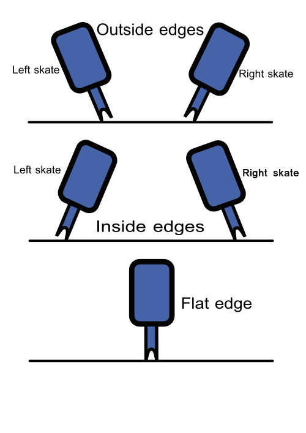
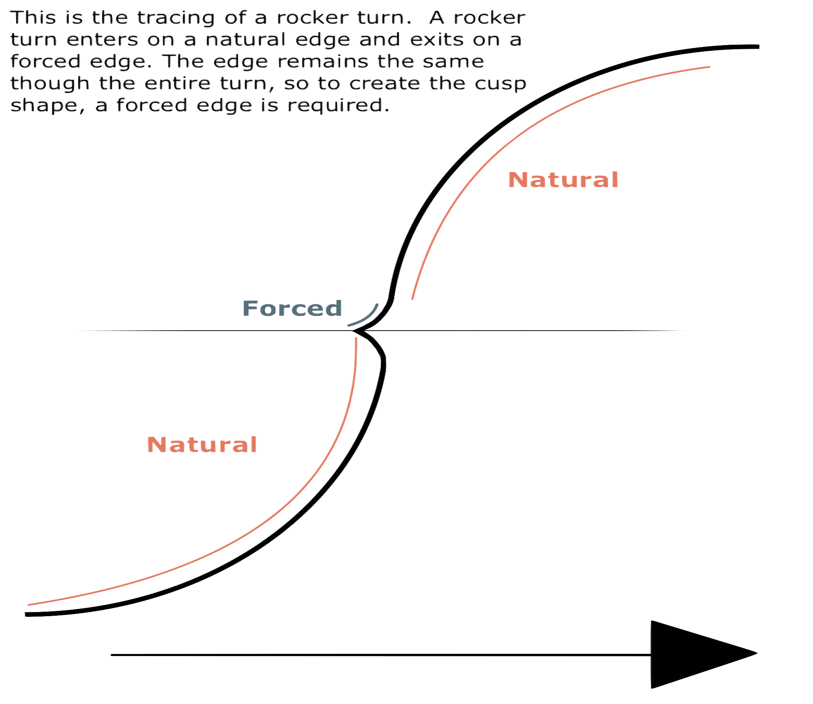

It is commonly mistaken that a skate blade has only one edge that comes to a point along the bottom of the blade. In reality, each skate blade has a small, rectangular width that has two edges, an inside edge and an outside edge, which are separated by the radius of hollow.

This radius of hollow creates an inverted arc across the bottom of the blade, which causes the centre of the blade to be curved inwards and raised off of the ice. When skating, the edge of the blade is what allows the skate to “grip” or “cut” into the ice.
When a skater is using the edge closest to the baby toe side of their foot, they are considered to be on the outside edge. When the skater is using the edge closest to the big toe side of their foot, they are considered to be on the inside edge. For proper form and quality of skating, a skater should be balancing on a single edge at a time. When a skater is on an edge, the tracing on the ice appears as a single line.
When a skater is gliding on both edges simultaneously, they are considered to be on a flat. This is considered to be poor edge quality and should be avoided.
There are eight possible edges that can be performed when skating, where each edge is determined and named according to three factors:
| RFI | RFO | RBI | RBO |
| LFI | LFO | LBI | LBO |
 Natural edges occur when the edge on which the skater is balancing is the same as what would be expected for the direction of the skater's lean and the circle on which the skater is travelling. Natural edges are easily sustained when gliding and are usually the type of edge a skater will use as they skate.
Forced edges occur when the edge on which the skater is balancing is different from what would be expected for the direction of the skater's lean and the circle on which the skater is travelling. A forced edge is usually short in length and is most commonly seen immediately before or after certain difficult turns.